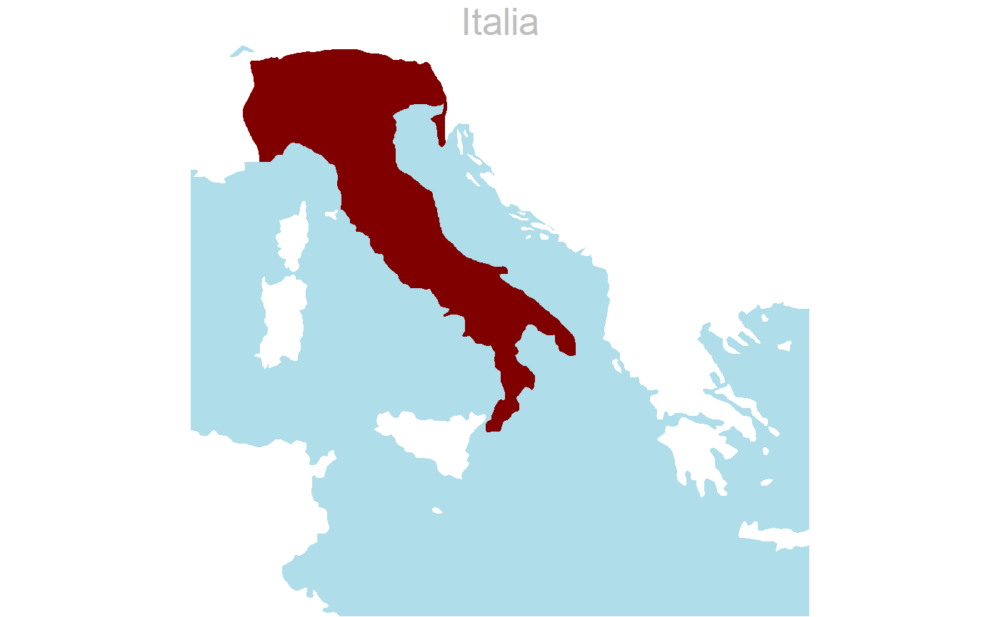

RomanProvs.Rmd"sdam" is an R package that provides tools for performing analyses within Social Dynamics and complexity in the Ancient Mediterranean SDAM, which is a research group based at Aarhus University. It allows accessing and manipulating data from the Epigraphic Database Heidelberg API, performing HTTP requests, visualizing interval time events, compute probabilities of existence of archaeological assemblages and artifacts, and produce similarity matrices by simple matching between these objects.
After uninstalling an old version of the "sdam" package from local machine and running as administrator, install version 0.4.0 from a GitHub repository.
# remove old version from AU computer remove.packages("sdam", lib="C:/Users/AUID/R/win-library/version/") # install RC version from Github require("devtools") devtools::install_github("sdam-au/sdam")
# load package and check version library("sdam") packageVersion("sdam")
[1] '0.4.2'Package "sdam" comes with some datasets related to the Epigraphic Database Heidelberg, and also information about ancient Roman provinces and regions.
# retrieve available datasets data(package="sdam")
Datasets in package ‘sdam’:
EDH Epigraphic Database Heidelberg Dataset
rp Roman province names and acronyms as in EDH
rpmp Maps of ancient Roman provinces and Italian regions
rpmcd Caption maps and affiliation dates of Roman provincesFor instance, the acronym names of Roman provinces found in the EDH dataset can be obtained from "rp" as following:
[1] "Ach" "Aeg" "Aem" "Afr" "AlC" "AlG" "AlM" "AlP" "ApC" "Aqu" "Ara" "Arm" "Asi" "Ass" "Bae" "Bar"
[17] "Bel" "BiP" "BrL" "Bri" "Cap" "Cil" "Cor" "Cre" "Cyp" "Cyr" "Dac" "Dal" "Epi" "Etr" "Gal" "GeI"
[33] "GeS" "HiC" "Inc" "Iud" "LaC" "Lig" "Lug" "Lus" "LyP" "MaC" "MaT" "Mak" "Mes" "MoI" "MoS" "Nar"
[49] "Nor" "Num" "PaI" "PaS" "Pic" "Rae" "ReB" "Rom" "Sam" "Sar" "Sic" "Syr" "Thr" "Tra" "Tri" "Umb"
[65] "Val" "VeH"Such output can result useful for other computations within "sdam" like accessing parts of EDH corresponding to the province with function edhw().
Cartographical maps of Roman provinces under emperors Trajan and Hadrian (year 117AD), and Italian regions under emperor Augustus (year 27 BC) can be plotted with function plot.map(). This is a convenient function that depends on "rpmp", which is a dataset that contains the names and vector shapes of the maps and, if wanted, it also invokes dataset "rpmcd" for including map captions in the plot plus date(s) when such territory ``officially’’ became a Roman province.
As an example, we start with the first province in "rp" that corresponds to "Ach" or "Achaia":
# cartographical map of ancient Achaia plot.map(x=names(rp)[1])
year 117 AD
Not all entries in "rp" are currently supported in plot.map(), only the territories formally belonging to the Roman Empire in year 117AD plus a silhouette of Italy. Below, the Italian peninsula is depicted without a caption by disabling cap in the function.
# silhouette of Italian peninsula plot.map(x="Ita", cap=FALSE)

As with the "rpmp" dataset, "rpmcd" is another set of data with a list of lists format where the shapes of cartographical maps are recorded in different slots of the first component. Additionally to the plotted map information, the dataset "rpmcd" contains in the provd component of each entry, the approx. year when the province became part of the Roman Empire. In the case of the regions, such date corresponds to a year of the Italian consolidation.
# date for each province is in 'provd' component of dataset data("rpmcd") rpmcd$Ach$provd
[1] "27 BC"Since all years are located in the second component, we obtain the affiliation dates from these components for all provinces/regions and recorded this information in object est (that stand for established).
# atomic vector with dates in 'rpmcd' est <- unlist(lapply(rpmcd, function (x) x[[2]]), use.names=FALSE)
[1] "27 BC" "30 BC" "146 BC" "63AD or 58AD"
[5] "63AD or 14BC" "63AD or 14BC" "51 BC" "105 AD"
[9] "114 AD" "133 BC" "116 AD" "197 BC"
[13] "51 BC" "74BC or 64BC" "43 AD" "17 AD"
[17] "64 BC" "238 BC" "66 BC?" "58-30 BC"
[21] "74 BC" "106 AD" "32BC or 10AD" "148 BC"
[25] "25 BC" "27 BC" "27 BC" "197 BC"
[29] "272 BC" "6 AD" "51 BC" "197 BC"
[33] "43 AD" "42AD or 44AD" "148 BC?" "42 AD or 44 AD"
[37] "116 AD" "6 AD" "6 AD" "121 BC"
[41] "16BC or 15BC" "9AD or 10AD" "9AD or 10AD" "16BC or 15BC"
[45] "238 BC" "241 BC" "64 BC" "46 AD"
[49] "272 BC (Ita cons.)" "272 BC (Ita cons.)" "272 BC (Ita cons.)" "272 BC (Ita cons.)"
[53] "272 BC (Ita cons.)" "272 BC (Ita cons.)" "272 BC (Ita cons.)" "272 BC (Ita cons.)"
[57] "272 BC (Ita cons.)" "272 BC (Ita cons.)" "272 BC (Ita cons.)"Then we use a regular expression to remove the text " (Ita c)" from the last 11 entries in est that correspond to the Italian regions. In this way, we count only date information in this object for further computation:
[1] "27 BC" "30 BC" "146 BC" "63AD or 58AD" "63AD or 14BC"
[6] "63AD or 14BC" "51 BC" "105 AD" "114 AD" "133 BC"
[11] "116 AD" "197 BC" "51 BC" "74BC or 64BC" "43 AD"
[16] "17 AD" "64 BC" "238 BC" "66 BC?" "58-30 BC"
[21] "74 BC" "106 AD" "32BC or 10AD" "148 BC" "25 BC"
[26] "27 BC" "27 BC" "197 BC" "272 BC" "6 AD"
[31] "51 BC" "197 BC" "43 AD" "42AD or 44AD" "148 BC?"
[36] "42 AD or 44 AD" "116 AD" "6 AD" "6 AD" "121 BC"
[41] "16BC or 15BC" "9AD or 10AD" "9AD or 10AD" "16BC or 15BC" "238 BC"
[46] "241 BC" "64 BC" "46 AD" "272 BC" "272 BC"
[51] "272 BC" "272 BC" "272 BC" "272 BC" "272 BC"
[56] "272 BC" "272 BC" "272 BC" "272 BC" "sdam" has the internal function dts() to convert dates having characters into a numerical format, which may be useful in further computations like when working with chronologies.
# dates internal function dts(est)
In the following example, object chron records the dates in ascending order when the territory became officially part of the Roman Empire. In case an item has two competing dates, which is here related with the word or, then dts() takes only the first date.
# dates in the order of their occurrence chron
272 BC 241 BC 238 BC 238 BC 197 BC 197 BC
-272 -241 -238 -238 -197 -197
197 BC 148 BC 148 BC? 146 BC 133 BC 121 BC
-197 -148 -148 -146 -133 -121
74BC or 64BC 74 BC 66 BC? 64 BC 64 BC 51 BC
-74 -74 -66 -64 -64 -51
51 BC 51 BC 32BC or 10AD 30 BC 27 BC 27 BC
-51 -51 -32 -30 -27 -27
27 BC 25 BC 16BC or 15BC 16BC or 15BC 6 AD 6 AD
-27 -25 -16 -16 6 6
6 AD 9AD or 10AD 9AD or 10AD 17 AD 42AD or 44AD 42 AD or 44 AD
6 9 9 17 42 42
43 AD 43 AD 46 AD 63AD or 58AD 63AD or 14BC 63AD or 14BC
43 43 46 63 63 63
105 AD 106 AD 114 AD 116 AD 116 AD
105 106 114 116 116 For instance, the plot animation below –with a GIF file produced with the gifski package– shows the Italian regions in year 27 BC.
# exclude 'Ita', first entry in chronology reg <- names(rpmcd)[which(est%in%unique(names(chron))[1])][-1] for(j in seq_len(length(reg))) plot.map(x=reg[j], cap=FALSE)
Italian regions under Augustus (27 BC)
In a similar manner as the Italian regions, the code below produces cartographical maps of Roman provinces (as they were in year 117 AD) according to the year of their incorporation to the Roman Empire.
# discharge oldest date for the Italian regions for(i in seq_len(length(unique(names(chron))))[-1]) { # choose provinces according to date prv <- names(rpmcd)[which(est%in%unique(names(chron))[i])] for(j in seq_len(length(prv))) { # plot with customized date color and positioning plot.map(x=prv[j], date=TRUE, fcol2="#FFFF00", xd=.7, yd=.42) } }
Roman provinces as in year 117 AD